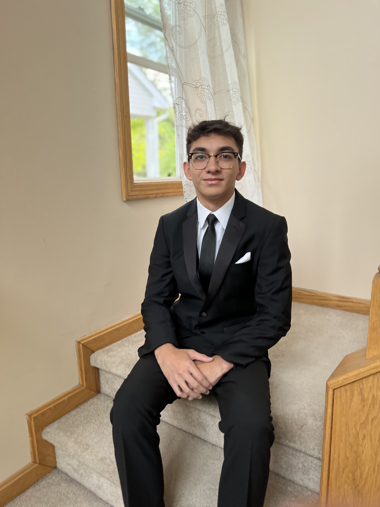
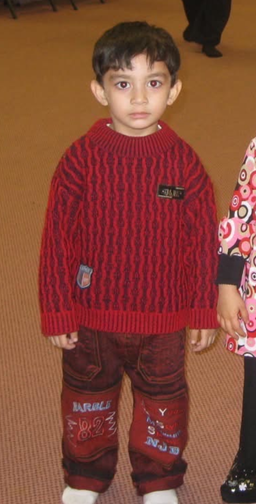

My name is Inshaal Attiq. As a child I always had a passion for technology, whether it was playing games or watching my dad fix a broken TV. I was always intrigued by the science behind it. Currently, I am a Computer Science student at Kent State University with an interest in programming and software development. I enjoy solving problems, building projects, and continuously improving my coding skills while learning new technologies. I am also in a Cybersecurity club learning about the risks of the online world and how to avoid financial traps and scams.
You can contact me via email: iattiq@kent.edu
I enjoy programming, learning about new technology, and working on coding projects. In my free time, I like playing basketball, exploring new software tools, gaming, and finding ways to improve my problem solving skills.
Since I was a kid my favorite sport has always been basketball, from watching the Cavs to playing for my school. Basketball is something that has made a big difference in my life and allowed me to be physically active.
I love playing video games in my free time. At one point I was nationally ranked in Valorant. During covid all I did was play video games for hours and improved my gaming skills drastically.
My current job at Kent State University is repairing and helping people with their computers. I built my own gaming desktop PC in 2020 and I found it really fun. The opportunity to work on computers is something I am passionate about.
Classes that made a difference and influenced me to work harder
Taking Introduction to Computer Science at Kent State University helped me understand the basic concepts of how computers work and how technology is used to solve problems. In this course, I learned about topics like algorithms, programming basics, and how different parts of a computer system work together. It helped me develop problem solving and logical thinking skills, and it gave me a better understanding of the foundations of computer science.
Taking this class allowed me to deepen my understanding of programming by focusing on how to build structured and reusable code. In this class, I worked with concepts such as objects, classes, inheritance, and polymorphism to create more organized programs. The course helped me think more critically about program design and improved my ability to write cleaner, more efficient code when developing larger software projects.
This class helped me learn how to write more organized and maintainable programs by using common programming patterns and best practices. In this course, I focused on improving the way software is structured and learned techniques for solving problems in a consistent and efficient way. It helped me strengthen my coding skills and understand how experienced developers design programs that are easier to expand and maintain over time.
Working at a repair center on campus allowed me to be comfortable in a setting where I am responsible for other peoples devices.
Being able to interact with customers on a daily basis and restocking shelves allowed me to understand the importance of keeping a store running and healthy.
As a tutor at the Islamic Center of Cleveland I was responsible for teaching children how to read the Quran and understand translations.
"You don't have to see the whole staircase, just take the first step"
— Martin Luther King, Jr.